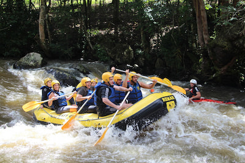
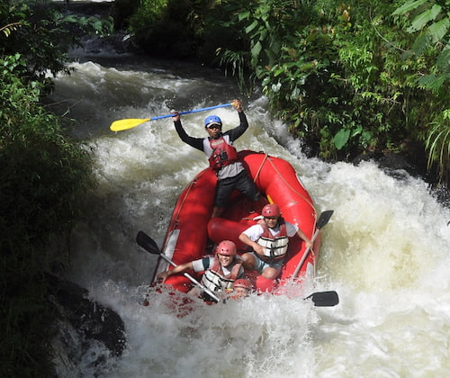
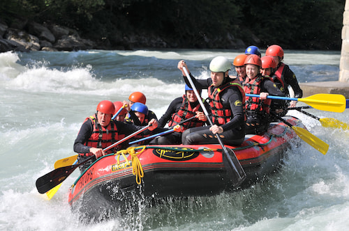
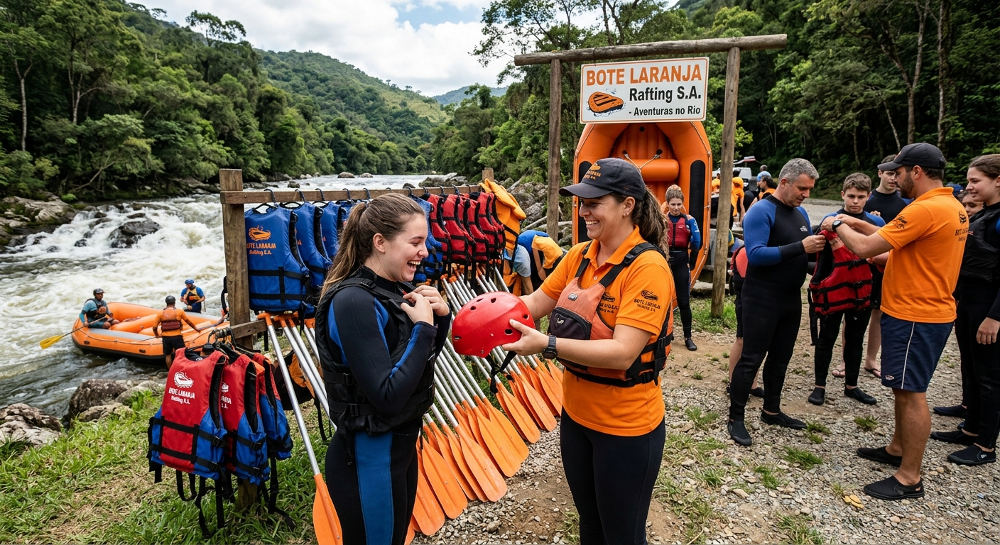

Equipamentos certificados!
Passeios de Rafting em Alta!

Brotas/SP
Brotas é um dos destinos de rafting mais famosos do Brasil. Suas corredeiras emocionantes, rios cercados pela natureza e excelente estrutura turística atraem aventureiros de todas as idades. Diversão, adrenalina e belas paisagens garantem uma experiência inesquecível.

Extrema/MG
Extrema combina aventura e natureza em um cenário de montanhas, rios e áreas preservadas. O rafting na região oferece corredeiras desafiadoras na medida certa, além de clima agradável e fácil acesso, tornando o destino ideal para quem busca emoção e contato com a natureza.

Foz do Iguaçu/PR
Foz do Iguaçu reúne aventura e paisagens mundialmente conhecidas. Além da proximidade com as impressionantes Cataratas do Iguaçu, o rafting proporciona emoção em meio a cenários exuberantes. Um destino perfeito para quem deseja unir turismo, natureza e adrenalina.
Segurança em 1º lugar!

Compare nossos preços:
| Nível de Rafting | Dificuldade | Distância | Duração | Preço |
|---|---|---|---|---|
| Iniciante | Baixa | 7 km | 3 horas | R$ 250,00 |
| Intermediário | Média | 10 km | 4 horas | R$ 320,00 |
| Avançado | Alta | 12 km | 5 horas | R$ 400,00 |
Já escolheu?
Garanta sua reserva!
Fale Conosco